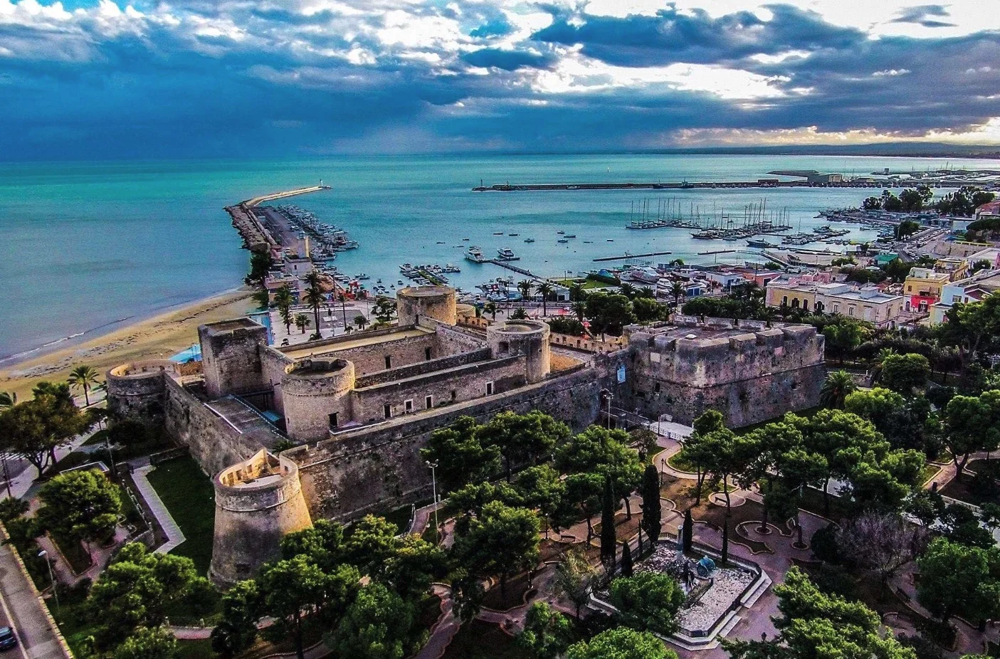

A venti minuti di auto da Casa e Bottega, arrampicato su una collina come un nido di aquila, c'è Monte Sant'Angelo. Uno di quei posti che vi trasforma il modo di stare nel mondo. Non è solo un borgo. È una stratificazione di storia, fede, pietra bianca e voci sussurrate nei caruggi. È anche il luogo dove la spiritualità e il profano si abbracciano in modo perfetto, come solo il Meridione sa fare.
Il Santuario di San Michele Arcangelo, la storia che non finisce mai
Nel 490 d.C., un principe longobardo ebbe una visione. L'arcangelo Michele gli apparve e lo guidò verso una grotta nel Monte Gargano. Da quel momento, il Santuario di San Michele Arcangelo divenne uno dei tre principali luoghi di pellegrinaggio del cristianesimo medievale, insieme a Santiago de Compostela e Gerusalemme. Ci potete ancora discendere nella grotta, nei medesimi scalini che hanno percorso migliaia di pellegrini nei secoli. La pietra fredda, la luce che filtra dall'alto, l'altare nella roccia: è un'esperienza che non richiede di credere in Dio per sentire qualcosa di grande. Noi di Casa e Bottega ve lo consigliamo di visitarlo in una mattina tranquilla, prima che arrivino gli autobus di turisti. La magia esiste solo nel silenzio.
Le stradine bianche e i caruggi senza fine

Una volta usciti dal Santuario, vi troverete dentro il borgo vero. Strade strette, bianche di calce, che sembrano non finire mai. I caruggi sono così stretti che due persone faticano a passarsi. Le facciate delle case sono dipinte a calce fresca, le finestre sono minuscole, e sopra le teste volano i panni stesi. Non vedrete quasi nessuno a piedi tra le strade: la gente vive dentro le case, gli spazi pubblici sono riservati ai gatti e all'eco dei vostri passi. È un labirinto bellissimo, e vi consigliamo di perdervi intenzionalmente, di girare senza mappa, di scendere dove l'istinto vi porta.
Il Castello e la vista del Gargano intero
In cima al borgo, dove non potete arrivare in auto, c'è il Castello Normanno-Svevo. Dalle sue mura, potete vedere quasi tutto il Gargano: il mare verso Vieste a nord, la costa verso Mattinata a sud, la Foresta Umbra verso l'interno. È uno di quei momenti in cui capite l'importanza strategica di questi luoghi nel Medioevo. Il castello protegge il Santuario da nord, il Santuario attrae i pellegrini da tutto il cristianesimo, la geografia crea la storia. La fatica di salire fino in cima merita quella vista.
I sapori di Monte Sant'Angelo
Quando tornerete dai caruggi stanchi e affamati, vi troverete di fronte a una scelta: una trattoria locale o i panzerotti. Consigliamo di provare tutti e due. I panzerotti di Monte Sant'Angelo non sono come quelli fritti al lungommare delle spiagge turistiche. Sono ripieni di carne macinata e ragù, fritti in olio bollente, croccanti fuori e morbidi dentro. Comprateli da una nonna che li fry nel suo locale minuscolo e mangiateli seduti su un muretto. Per la cena, cercate una trattoria: orecchiette con le cime di rapa, stracchella fresca con taralli croccanti (i taralli di Monte Sant'Angelo hanno una reputazione meritata), polpo alla pignata. La cucina è quella contadina-marinara del Gargano, con ingredienti che non hanno viaggiato lontano dalla montagna.
Monte Sant'Angelo tra pellegrinaggio e turismo
Una cosa che vi colpirà è il mix di pellegrini autentici e turisti da selfie. Alcuni arrivano per fede vera, hanno tracciato con il dito la loro rotta su una mappa e guidano chilometri per toccare quell'altare nella roccia. Altri arrivano per la foto con la vista. Entrambi contribuiscono al fascino del luogo: è un equilibrio precario e bellissimo tra il profano e il sacro, tra la spiritualità e il commercio, tra la storia e l'istante. È il Meridione autentico, tutto insieme, contradditorio e affascinante.
Vi aspettiamo a Casa e Bottega.
Prenota il tuo soggiorno